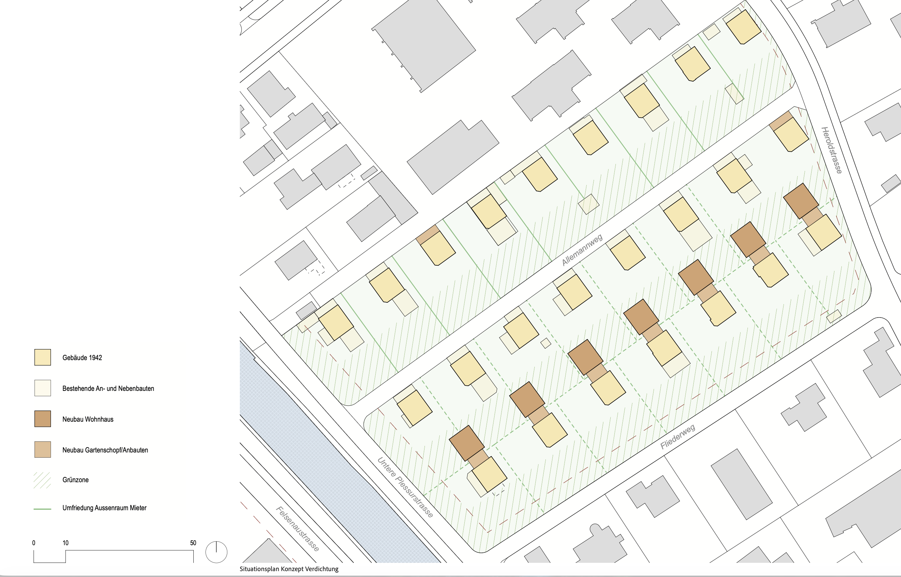
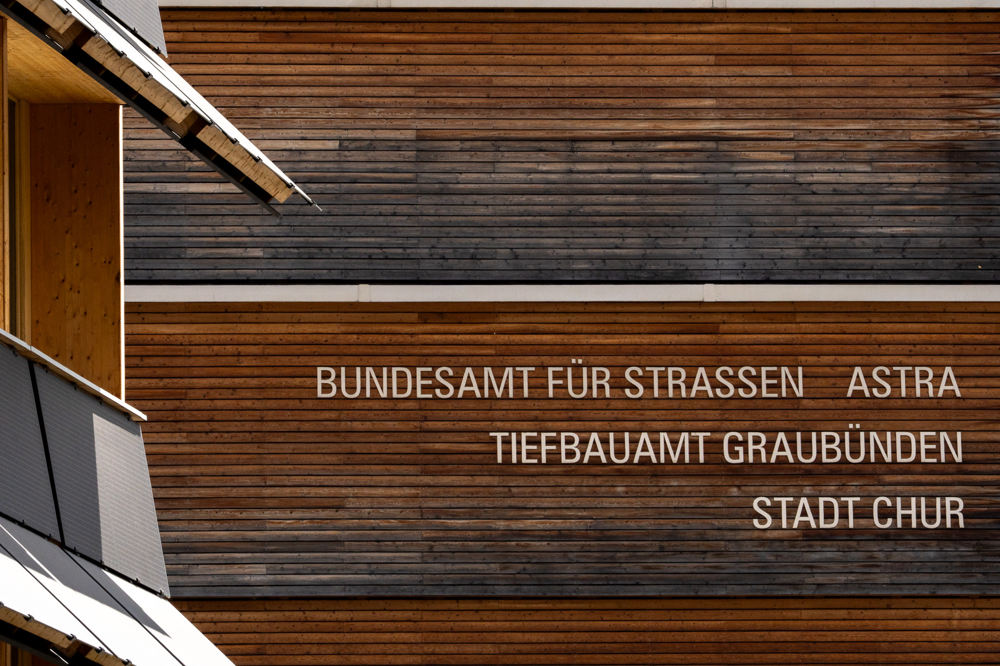

Angesichts der 10-Millionen-Schweiz-Initiative
Die Stadtplanung in Chur
Die schweizer Bevölkerung nimmt kontinuierlich zu – so auch die Nachfrage nach Wohnraum und Infrastruktur. Dies stellt in einem kleinen Land, wie der Schweiz, mit viel Landwirtschaftszonen und unproduktiven Flächen eine grosse Herausforderung dar. Davon betroffen sind auch kleinere Städte wie Chur. Denn als wichtiges Zentrum der Region muss auch sie sich intensiv mit der zukunftsorientierten Stadtplanung beschäftigen.

Vor rund zwölf Jahren trat das revidierte Raumplanungsgesetz in Kraft, seither soll die Schweiz einen grösseren Fokus auf die Verdichtung von Städten und Dörfer nach Innen setzen. Es schreibt den Kantonen vor, dass Bauzonen nicht zu gross dimensioniert sein dürfen, dafür sollen bestehende Bauzonen besser genutzt werden.
Doch die Umsetzung dieser Vorgaben ist leichter gesagt als getan, denn gleichzeitig steigt der Komfortanspruch der Bevölkerung immer mehr. Menschen wollen grössere Wohnflächen und einen attraktiven Freiraum. Wenn es um die Verdichtung geht, haben deshalb viele Einwohner:innen Angst vor einer Abnahme der Lebensqualität. Laut Stadtrat Simon Gredig ist jedoch die Churer Altstadt, der am meist verdichtete Churer Stadtteil, das beliebteste und attraktivste Wohnquartier.
Entwicklung der Stadt Chur
Chur hat sich von einem kleinen Siedlungskern zu einer wichtigen regionalen Zentrumsstadt entwickelt. Ein solcher Wachstum brauchte schon immer Zeit und brachte grosse Herausforderungen mit sich. Heute befindet sich die Stadt noch immer in einer wachsenden Funktion, jedoch unter anderen Anforderungen – der Raum ist begrenzt und der Fokus muss auf Verdichtung und smarte Lösungen gesetzt werden.
Diese Entwicklung lässt sich bis in die Römerzeit zurückverfolgen, als Chur unter dem Namen Curia Raetorum als Verwaltungszentrum der Provinz Raetien eine strategisch bedeutende Rolle einnahm. Die günstige Lage im Alpenrheintal, an wichtigen Handels- und Passrouten gelegen, legte den Grundstein für eine kontinuierliche Besiedlung über Jahrhunderte hinweg. Mit der Zeit wuchs die Stadt organisch: Neue Quartiere entstanden, die Infrastruktur wurde ausgebaut und die Bevölkerungszahl stieg stetig an.
Im 20. Jahrhundert erfuhr Chur einen besonders markanten Wandel. Industrialisierung, verbesserte Verkehrsanbindung durch die Rhätische Bahn sowie der Ausbau von Bildungs- und Verwaltungseinrichtungen machten die Stadt zum Zentrum des Kantons Graubünden. Diese Dynamik zog Menschen aus der ganzen Region an und verstärkte den Bedarf an Wohnraum, Arbeitsplätzen und öffentlichen Dienstleistungen.
Heute steht Chur vor einer neuen Generation von Herausforderungen. Das Wachstum kann nicht mehr in die Breite gehen – stattdessen rücken Konzepte wie innere Verdichtung, die Aufwertung bestehender Bauzonen und die nachhaltige Nutzung von Ressourcen in den Vordergrund. Smarte Stadtplanung, digitale Infrastruktur und eine enge Zusammenarbeit zwischen Politik, Wirtschaft und Bevölkerung sind gefragt, um Chur auch für künftige Generationen als lebenswertes und funktionierendes Zentrum zu erhalten.

Auch moderne Verdichtungsprojekte setzten einen grossen Wert auf den Erhalt der Lebensqualität. Wichtig dabei ist vor allem die aktive Gestaltung des Aussenraums Dieser soll anstelle von leblosen Rasenflächen bepflanzte Begegnungsräume für die Anwohner:innen schaffen. Die Siedlung am Allemannweg in Chur zeigt, wie moderne Verdichtung erfolgreich umgesetzt werden kann.
Verdichtungsprojekt Allemannweg
1942 wurden 24 identische Einfamilienhäuser mit grosszügigem Garten im Plessurquartier in Chur erbaut. Diese sind mit der Zeit jedoch in die Jahre gekommen und wurden Teilweise saniert. Damit das einheitliche Erscheinungsbild aufrechterhalten werden konnte, wurde die Siedlung neu konzipiert.

Trotz geplanter Verdichtung war es wichtig, dass Grünflächen und Offenheit der Siedlung erhalten bleiben. Es wurden sieben Neubauten vorgeschlagen, die das ursprüngliche Siedlungsprinzip fortführen. So kann effizient verdichtet werden, ohne den Bestand zu beeinträchtigen, und gleichzeitig Raum für neue Bewohner geschaffen.
Wachsende Bevölkerung
Grund für die vom Raumplanungsgesetz vorgeschriebene Verdichtung ist unter anderem der exponentielle Anstieg der schweizer Bevölkerung.

Die Verdoppelung der Bevölkerungszahl seit 1950 ist der Auslöser für die Lancierung der 10-Millionen-Schweiz-Initiative der SVP.
Erklärung zur 10-Millionen-Schweiz-Initiative
Eine Annahme der Initiative würde aber nicht bedeuten, dass in Zukunft weniger Menschen in der Stadt wohnen würden. Immer mehr Menschen möchten in die Stadt ziehen, anstelle im Dorf, in welchem sie aufgewachsen sind, zu leben und zu arbeiten. Laut Bundesamt für Statistik lebte vor hundert Jahren ein Drittel der Schweizer Bevölkerung im städtischen Raum, heute sind es drei Viertel. Durch diese Landflucht steigt der Druck auf den begrenzten Wohnraum aber auch auf den Verkehr.
Der Verkehr
Chur ist das grosse Arbeits-Zentrum des Bündnerlands. Das grosse Stellenangebot führt viele Einwohner:innen der umliegenden Agglomerationen und Dörfer in die Stadt. Diese Pendler:innen erzeugen morgens hinein in die Stadt und abends in die Gegenrichtung einen starken Verkehr. Davon betroffen sind der öffentliche Verkehr sowie der Strassenverkehr innerhalb der Stadt. Herausfordernd für die Verkehrsplanung ist, wie man den Strassenverkehr möglichst effizient in die Stadt hineinführt, aber möglichst vermeidet die Wohnquartiere zu tangieren.
Durch Kreisverkehr und Lichtsignalanlagen kann Verkehr gezielter und flüssiger durch stark belastete Gebiete, vorbei an Wohnsiedlungen, geführt werden.
Strassenbauprojekt Rosenhügel
Langfristige Verkehrsentwicklungskonzepte – wie beispielsweise das Churer Projekt «Anschluss Rosenhügel» (Entwicklungspläne bis 2050) – zeigen, wie gezielte Strassenbauprojekte auf wachsenden Verkehr reagieren können. Ein neuer Knoten mit Lichtsignalanlage soll den Verkehr effizienter über die Südumfahrung leiten und die überlastete Kasernenstrasse entlasten. Gleichzeitig wird ein neuer Velostreifen realisiert, der eine nachhaltige Mobilität fördert.
Beat Wildhaber, Leiter der Tiefbaudienste der Stadt Chur, erklärt, dass zudem separate Busspuren wie an der Masanserstrasse dem öffentlichen Verkehr gegenüber dem MIV einen Vorteil verschaffen.
Weiteres zum Umgang mit dem wachsenden Verkehr
Ein Blick in die Zukunft
Wachsende Bevölkerungszahlen, steigender Druck auf Wohnraum und Verkehr und begrenzte Flächen. Die Herausforderungen sind real. Doch die Beispiele aus Chur zeigen, dass Lösungen vorhanden sind: durchdachte Verdichtungsprojekte und gezielte Verkehrsplanung.
Ob die Initiative angenommen wird oder nicht, eine zukunftsorientierte Stadtplanung ist und wird künftig ein wichtiger Faktor zum Erhalt der schweizer Lebensqualität bleiben.